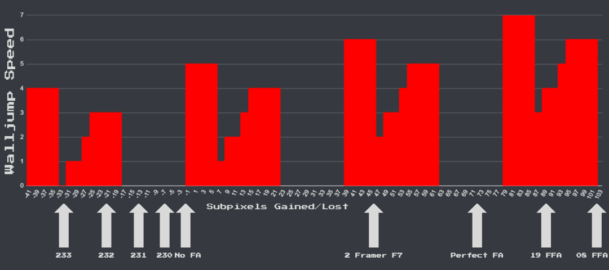

Walljump room
In the second room of 8-4, Mario needs to enter the floating pipe. The intended method is to climb up an invisible block, but it is faster to walljump off the side of the pipe.

2 Frame
Let go of B before coming out of the pipe and walk off of it. Before landing, repress B. After the pit, jump when the back of Mario is about lined up with the start of the floor. Do a bit less than a full jump. This should give 2 frames to jump off the pipe and gets 159 or 160 entry.
1 Frame
The standard setup for 1 frame walljump involves pressing D+R on the group to manipulation Mario's subpixel position.
Easier
Run off the pipe and full jump on frame 170. Start holding down while in the air. After landing, jump on frame 231. Do a medium speed wiggle when jumping up to the pipe. Optimal is frame 138 entry.
Intermediate
Start holding down while in the air. After landing, jump on frame 233. Do a faster wiggle when jumping up to the pipe. Optimal is gets 137 entry.
Hard
Run off the pipe, do not hold down. Before landing after the pit, release right. When you land, press left for 1 frame and immediately switch to right and jump. The wiggle can lose at most 1 subpixel. This can get 136 entry.
Forwards 1f
Running off the pipe and jumping on frame 170 is already setup for walljump if you don't turn around before jumping. After jumping on the pipe, hold D+R to get frame 143 entry.
6 Frame
Walk off the pipe like 2f setup. Run off the pipe before the pit. Full jump a few frames after landing. Press left right before hitting the pipe. Then jump and press right. Can save a few frames over 2f, but it is also easy to lose frames.
Right release
Run off the pipe and as soon as you're in the air do a short right release. Best is for 2 frames. This gives a 2 frame window to jump on the ground and doing a medium wiggle gets 137 entry. A 1 frame release also works but only gives 1 frame to jump, and requires a slower wiggle. 3 frames requires a very fast wiggle and it might be preferred to do a forwards walljump (145). You can know if you did 3 frames because there will only be one koopa.
Fast accel
Do a fast accel as soon as you come out of the pipe. Optimal jump is on frame 123 and gets 19 flashing. A 2 frame jump gets f7 flashing.
19 Accel
A 19 accel gains 72 subpixels over no accel. Do a down press and a slower wiggle to be in the 39-45 subpixel range. This can get 135 entry.
f7 Accel
An f7 accel gains 46 subpixels. Do no down press and a fast wiggle to get 135 entry.
Suboptimal accel
With a slower accel that still gains subpixels, you can do a down press and a medium wiggle to land in the -1-5 subpixel range which can get 136 entry.
Slow accel
If you lose time on the accel you can try to end up in the -41--35 range to get a 137 entry.